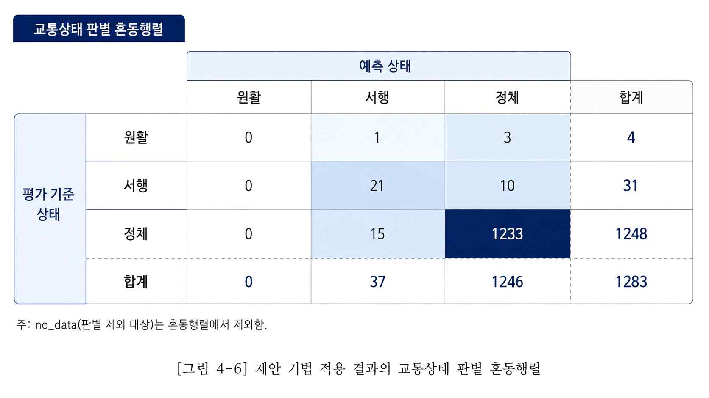

인용·표·그림
논문의 문장과 시각 자료는 독자가 주장과 근거를 확인할 수 있게 정리합니다. 제출처의 서식을 먼저 확인하고, 원고 전체에서 같은 규칙을 사용하세요.
문단을 쓰고 고치는 순서
장별 실제 문단과 작성 순서는 서론부터 결론까지 쓰는 법에서 볼 수 있습니다.
한 문단에는 하나의 중심 생각을 둡니다. 먼저 주장을 적고, 필요한 문헌·자료·예시를 제시한 뒤, 그 근거가 이 연구에서 무엇을 뜻하는지 설명합니다. 모든 문단을 같은 틀로 쓸 필요는 없지만, 인용만 모아 놓거나 결론만 반복하지 않도록 합니다.
수정할 때는 다음을 확인하세요.
- ‘효과적’, ‘우수’, ‘중요’처럼 비교 기준이 없는 표현에 구체적인 근거가 있는가.
- ‘기존 연구’가 어떤 연구를 가리키는지 알 수 있는가.
- 관측한 사실, 연구자의 해석, 향후 제안을 구분했는가.
- 같은 설명이 서론·방법·결론에서 불필요하게 반복되는가.
- 한 문장에 조건과 주장을 너무 많이 넣지 않았는가.
예를 들어 “제안방법은 모든 상황에서 우수했다”보다 “평가한 조건에서 비교방법보다 오차가 작았다. 다만 다른 환경에서의 성능은 확인하지 못했다”가 검증 범위를 분명하게 보여줍니다. 이는 작성 예시이며 실제 연구 결과를 뜻하지 않습니다.
원문을 확인하고 인용하기
남의 아이디어·결과·문장을 활용하면 출처를 표시합니다. 다른 표현으로 바꿔 썼더라도 출처가 필요합니다. 직접 인용은 인용임을 구분하고 해당 위치를 적습니다. APA를 사용하는 경우에는 직접 인용·바꿔쓰기·재인용 등의 세부 규칙을 공식 안내에서 확인할 수 있습니다. APA 본문 인용 안내
인용은 다음 순서로 확인합니다.
- 제목·저자·연도·출판처·DOI 등 서지정보를 확인합니다.
- 인용하려는 주장이 실제 원문의 어느 쪽·표·그림에 있는지 읽습니다.
- 원문의 연구 대상과 조건을 벗어나 해석하지 않았는지 확인합니다.
- 본문 인용과 참고문헌 항목이 서로 대응하는지 대조합니다.
초록만 읽은 논문으로 세부 방법이나 수치를 단정하지 않습니다. 다른 논문이 소개한 결과를 원저까지 확인하지 못했다면, 직접 읽은 것처럼 쓰지 말고 사용하는 인용 방식의 재인용 규칙을 따릅니다.
인용 양식은 연구방법만으로 결정하지 않습니다. 학위논문 서식과 전공의 작성 기준을 확인한 뒤 저자–연도 방식이나 번호 방식 등을 일관되게 적용합니다. 참고문헌 관리도구를 사용해도 자동 입력된 저자·연도·권호·쪽수·DOI를 직접 확인해야 합니다.
제목·캡션·본문은 역할이 다릅니다
제목은 무엇을 보여주는지, 주석은 어떻게 읽는지, 본문은 왜 봐야 하는지를 설명합니다. 여기서는 그림의 번호·제목과 필요한 설명을 묶어 캡션이라고 부릅니다. 이 논문은 표 제목을 표 위에, 그림 제목을 그림 아래에 두었습니다. 실제 배치는 제출처 양식을 우선하세요.
- 먼저 답할 질문을 정합니다. 정확한 값과 조건을 비교하려면 표를, 흐름·관계·분포를 보여주려면 그림을 선택합니다.
- 번호와 제목을 붙입니다. ‘실험 결과’보다 ‘무엇의 어떤 결과인지’ 드러내고, 조건이 여럿이면 제목이나 주석에서 구분합니다.
- 읽는 기준을 적습니다. 단위·분모·약어·축·범례·제외 기준 중 독자가 필요한 것을 제목, 열 이름, 주석에 나눠 씁니다.
- 본문을 연결합니다. 번호로 소개하고 → 볼 값이나 방향을 짚고 → 의미와 한계를 설명합니다. ‘위 표’, ‘아래 그림’만으로 가리키지 않습니다.
아래 사례는 김희섭 석사논문의 20260625 제출본에서 가져왔습니다. 표의 항목·수치와 그림 원본, 본문 발췌를 보여주며, 추가한 주석·캡션은 ‘작성 예시’로 구분했습니다. 원문 문장은 줄바꿈·띄어쓰기만 정리했습니다. 수치는 논문의 보고값입니다. 원자료와 판본
실제 표: 제목·분모·핵심 수치를 함께 보여주기
이 표는 전체 성능을 요약합니다. 제목으로 비교 대상을 알리고, ‘지표–값–해석’으로 읽는 순서를 정한 예시입니다. 아래는 원문 표를 웹에서 읽기 쉽게 옮긴 것입니다.
[표 4-6] 교통상태 판별 전체 성능 요약
| 지표 | 값 | 해석 |
|---|---|---|
| 유효 비교쌍 | 1,283 | 상태 분류 성능평가에 사용된 시간창 |
| 상태 일치 수 | 1,254 | 평가기준 상태와 예측 상태가 일치한 시간창 |
| 상태 불일치 수 | 29 | 평가기준 상태와 예측 상태가 다른 시간창 |
| 전체 정확도 | 0.9774 | 유효 비교쌍 기준 전체 상태 일치율 |
| 오분류율 | 0.0226 | 유효 비교쌍 기준 상태 불일치율 |
| Macro-F1 | 0.5355 | 상태별 F1-score의 단순 평균 |
| Weighted-F1 | 0.9767 | 상태별 표본 수를 반영한 가중 평균 |
4.2.2절 「전체 정확도 분석」 · 본문 61쪽 / PDF 80쪽. 원문 항목·수치를 유지하고 띄어쓰기를 정리했습니다.
제목에서 배울 점: ‘교통상태 판별’은 대상이고 ‘전체 성능 요약’은 표의 역할입니다. 내 표도 [대상·조건]의 [비교할 항목]을 드러내세요. 단위가 서로 다른 행을 섞을 때는 모든 값에 같은 단위를 붙이지 않습니다. 이 표의 첫 세 행은 시간창 수이고, 나머지는 비율 또는 점수입니다.
표 아래 주석을 보완한다면 — 작성 예시: “주: 유효 비교쌍은 평가기준 상태와 예측 상태가 모두 존재하는 10초 시간창이다. 정확도와 오분류율의 분모는 1,283개이며, 판별불가(no_data) 시간창은 제외한다. 정확도 0.9774는 97.74%에 해당한다.” 이 문장은 원문의 표 주석이 아니라, 방법·본문에 있는 조건을 표 가까이 모은 예시입니다.
본문에서는 어떻게 설명했나
제안하는 기법 적용 상태 라벨의 전체 성능은 [표 4-6]과 같다. 최종 유효 비교쌍 1,283개 중 평가기준 상태 레이블과 제안하는 기법 적용 상태 라벨이 일치한 시간창은 1,254개이며, 상태가 일치하지 않은 시간창은 29개이다. 이에 따라 전체 정확도는 0.9774로 산출되었다.
표를 소개하는 실제 문단 · 본문 60쪽 / PDF 79쪽
소개 → 관측값 → 지표: 첫 문장은 볼 표를 지정하고, 둘째 문장은 분모와 일치·불일치 수를 밝히며, 셋째 문장은 계산 결과를 보고합니다. 모든 행을 되풀이하기보다 핵심 질문에 답하는 값을 고릅니다.
전체 정확도 0.9774는 최종 유효 비교쌍 기준으로 제안하는 기법 적용 상태 라벨이 평가기준 상태 레이블과 대부분 일치했음을 의미한다. 그러나 이 값은 전체 평가 시간창 2,001개에 대한 정확도가 아니라, 평가기준 상태와 제안하는 기법 상태가 모두 유효한 1,283개 시간창에 대한 상태 일치율이다.
표 뒤에서 해석 범위를 밝히는 실제 문단 · 본문 61쪽 / PDF 80쪽
해석에는 분모를 다시 연결합니다. 높은 숫자만 쓰면 독자는 전체 자료에서 같은 성능이 나왔다고 읽을 수 있습니다. 이 사례에서는 전체 시간창 2,001개와 지표를 계산한 1,283개를 구분합니다. 분모와 제외 기준의 실제 비교
내 본문의 뼈대 — 작성 예시: “[표 번호]는 [대상·조건]의 [분석 항목]을 보여준다. [분모·단위]를 기준으로 [핵심 관측값]이 나타났다. 이는 [해석]을 뜻하며, [제외 조건·한계]를 고려해야 한다.”
실제 그림: 읽는 방향부터 설명하기
혼동행렬은 기준 상태와 예측 상태가 어디에서 맞고 엇갈리는지 보여주는 그림입니다. 이 예시에서는 행이 평가기준 상태, 열이 예측 상태입니다. 대각선은 일치한 시간창이고, 나머지 칸은 어떤 상태로 다르게 판별했는지를 보여줍니다.


4.2.3절 「혼동행렬 기반 상태별 판별 결과」 · 본문 62쪽 / PDF 81쪽. PDF에 들어 있는 그림을 그대로 추출했습니다. 위 캡션은 본문에 붙은 표제입니다.
그림 속 수치를 표로 읽기
| 평가기준 상태 | 예측 원활 | 예측 서행 | 예측 정체 | 합계 |
|---|---|---|---|---|
| 원활 | 0 | 1 | 3 | 4 |
| 서행 | 0 | 21 | 10 | 31 |
| 정체 | 0 | 15 | 1,233 | 1,248 |
| 합계 | 0 | 37 | 1,246 | 1,283 |
단위: 10초 시간창 수. 원본 그림의 값과 합계를 옮겼습니다. no_data는 혼동행렬에서 제외되어 있습니다.
제목과 캡션에서 배울 점: 제목은 ‘무엇을 비교한 그림인지’를 알려주고, 설명은 행·열의 의미, 값의 단위, 분석 대상, 제외 기준을 알려줘야 합니다. 색이 진하다는 설명만으로는 충분하지 않습니다. 이 그림은 칸 안의 숫자와 행·열 이름으로도 읽을 수 있습니다.
설명 캡션을 보완한다면 — 작성 예시: “행은 평가기준 상태, 열은 제안방법의 예측 상태를 나타낸다. 각 값은 10초 시간창 수이며, 두 상태가 모두 유효한 1,283개 비교쌍을 사용하였다. no_data는 제외하였다.” 긴 해석은 본문에 두고, 캡션에는 그림을 읽는 데 필요한 조건을 모읍니다.
본문에서는 어떻게 설명했나
혼동행렬은 평가기준 상태 레이블과 제안하는 기법 적용 상태 라벨의 대응 관계를 나타낸다. 행은 원천 DB 기반 평가기준 상태, 열은 제안하는 기법 적용 상태를 의미한다. 제안하는 기법 적용 상태 라벨의 혼동행렬 시각화는 [그림 4-6]과 같다.
그림을 소개하는 실제 문단 · 본문 62쪽 / PDF 81쪽
첫 설명은 읽는 법입니다. 무엇을 비교하는지, 어느 방향으로 읽는지, 어떤 번호의 그림인지 순서대로 안내합니다. 일반 그래프라면 가로축·세로축·단위·집단을, 흐름도라면 시작점·처리 단계·화살표·출력을 설명합니다.
[그림 4-6]에서 정체 상태는 1,248개 중 1,233개가 정체로 판별되어 높은 일치성을 보였고, 서행 상태는 31개 중 21개가 올바르게 판별되었다. 주요 오분류는 서행→정체 10개와 정체→서행 15개로, 서행·정체 경계에서 발생하였다. 원활 상태는 평가기준 표본이 4개에 불과하고 원활 예측 사례가 없어, 본 데이터만으로 판별 성능을 일반화하기 어렵다.
그림 뒤에서 결과와 한계를 설명하는 실제 문단 · 본문 62쪽 / PDF 81쪽
다음 설명은 관측과 해석입니다. 일치한 결과 → 주로 엇갈린 방향 → 자료가 부족한 상태를 차례로 짚습니다. 그림의 모든 칸을 나열하지 않고, 연구질문에 답하는 지점과 해석의 한계를 고릅니다. 여기서 기준은 원천 DB에서 구성한 레이블이며 외부 독립 장비의 절대 참값은 아닙니다.
내 본문의 뼈대 — 작성 예시: “[그림 번호]는 [관계·흐름·분포]를 나타낸다. [축·행·열·화살표]는 [의미]이며, [조건]에서 [핵심 패턴]이 관측되었다. 다만 [자료·범위의 한계] 때문에 [확인하지 못한 주장]까지 확대할 수 없다.”
내 표·그림을 완성하기 전
- 제목·번호: 본문, 표·그림 자체, 목차의 번호와 제목을 맞춥니다. 그림 파일 안에 제목을 넣었다면 별도 캡션과 중복되거나 달라지지 않는지도 봅니다.
- 읽는 기준: 단위·분모·약어·범례·포함 및 제외 기준이 필요한 위치에 있는지 확인합니다. 비율 0.9774와 백분율 97.74%를 구분하고 반올림 자릿수를 맞춥니다.
- 본문 연결: 번호로 소개했는지, 독자가 볼 핵심 값을 짚었는지, 그 결과의 의미와 한계를 설명했는지 확인합니다.
- 출처와 표현: 다른 자료를 그대로 쓰거나 재구성했다면 출처·수정 여부·이용조건을 확인합니다. 직접 만든 자료도 본문의 수집·분석 방법으로 근거를 찾을 수 있게 합니다.
- 읽기 크기: 최종 PDF에서 글자·축·범례가 읽히는지 확인합니다. 색만으로 구분하지 말고 선·기호·숫자도 사용합니다.
이 사례에서도 점검할 부분: 원문의 표 4-6은 표 목차와 본문 제목이 다르고, 그림 4-6은 그림 안의 제목·본문 캡션·그림 목차의 표현이 서로 다릅니다. 여기서는 본문 표제를 기준으로 소개했습니다. 자기 원고를 마무리할 때는 번호와 제목을 함께 맞추세요.
초록과 제목을 마지막으로 맞추기
초록에는 문제와 목적, 자료·방법, 핵심 결과, 의미와 적용 범위를 담습니다. 수치가 있다면 본문과 같아야 합니다. 제안이나 계획을 이미 검증한 결과처럼 쓰지 않습니다. 국문·영문 초록에서 대상과 결과, 결론의 강도를 맞춥니다.
제목은 실제 연구 대상과 핵심 문제를 표현합니다. 최종 연구 범위가 바뀌었다면 제목과 초록도 다시 검토하세요. 제목, 표지, 인준서, 제출 정보의 일치 여부와 PDF 변환 뒤 수식·표·그림 상태는 제출 점검에서 함께 확인합니다.